LexiHK made its Hong Kong Legal Week debut with live demonstrations, industry exchanges and selection as a designated provider under the Department of Justice LawTech funding scheme.
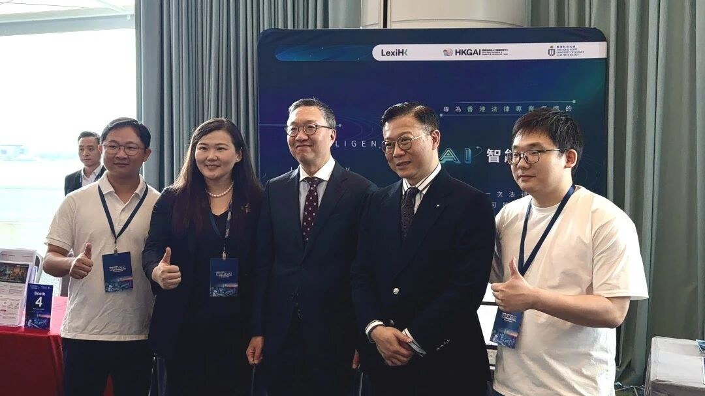
Overview
On 2 November, Hong Kong Legal Week 2026 opened for a five-day run under the theme “Collaboration and Innovation: Legal Synergy for a Shared Future”. As the annual flagship event of the Department of Justice of the Hong Kong Special Administrative Region, this year’s Legal Week brings together legal practitioners, business representatives, policymakers and representatives of international organisations from around the world. LexiHK, the legal artificial intelligence product of the Hong Kong Generative AI Research and Development Center (HKGAI), appears at Hong Kong Legal Week for the first time, presenting through product demonstrations and a dedicated presentation how the technology is actually being applied in Hong Kong legal scenarios.
During the event, Mr Paul Lam Ting-kwok (GBS, SC, JP), Secretary for Justice, Mr Horace Cheung Kwok-kwan (SBS, JP), Deputy Secretary for Justice, and a number of other guests visited the LexiHK booth to exchange views with the LexiHK research and development team and learn about the product’s functions and development progress. Professor Sirui Han, Head of LexiHK, also took the Insight Stage to deliver a dedicated presentation grounded in real legal work scenarios, showing how LexiHK supports research, streamlines processes and improves efficiency.
PART 01 Guests from the Liaison Office, the Department of Justice and the Law Society of Hong Kong Visit the LexiHK Booth
On 4 November, Mr Paul Lam Ting-kwok (GBS, SC, JP), Secretary for Justice, and Mr Horace Cheung Kwok-kwan (SBS, JP), Deputy Secretary for Justice, visited the LexiHK booth, watched product demonstrations and posed for a group photograph with the team. The two sides exchanged views on how artificial intelligence can serve Hong Kong’s legal sector, and the team focused on introducing LexiHK’s practice in applying local legal knowledge, supporting professional research and assisting work processes.
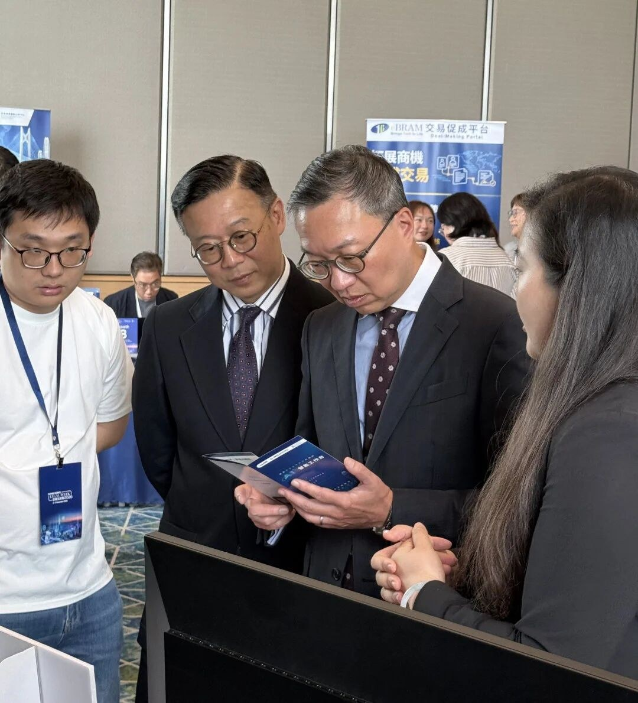
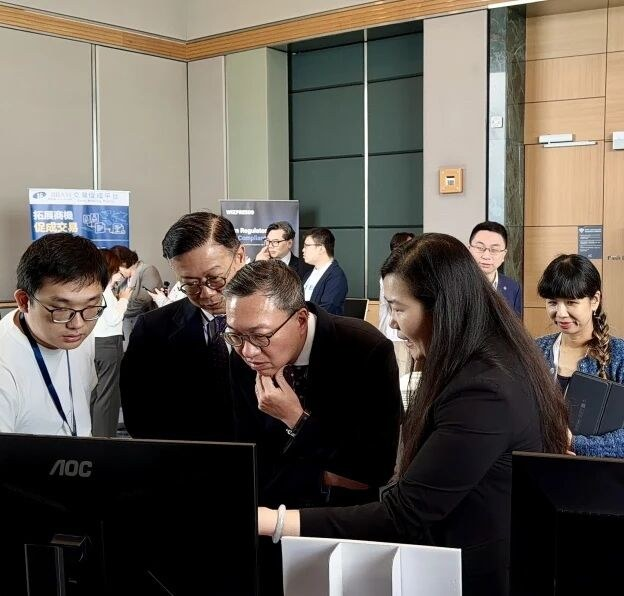
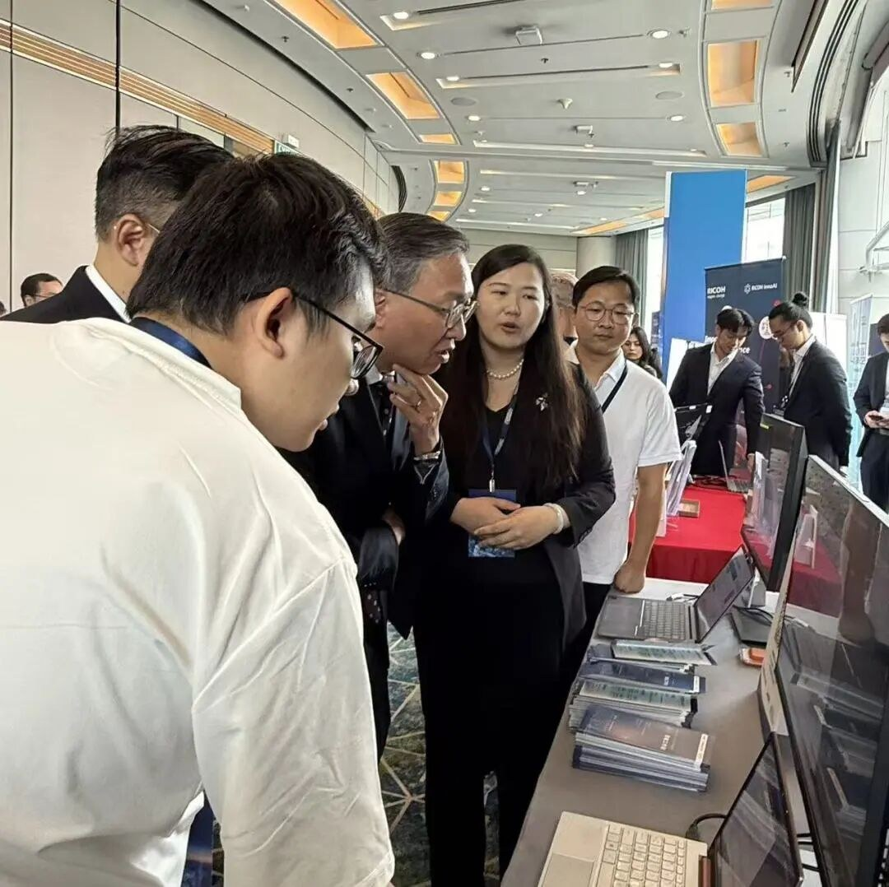
On 5 November, Ms Yuan Gujie, Deputy Director of the Liaison Office of the Central People’s Government in the Hong Kong Special Administrative Region, and Mr Liu Chunhua, Director-General of its Legal Affairs Department, visited the LexiHK booth to learn about LexiHK’s research and development achievements and its exploration of applications for Hong Kong’s legal sector.
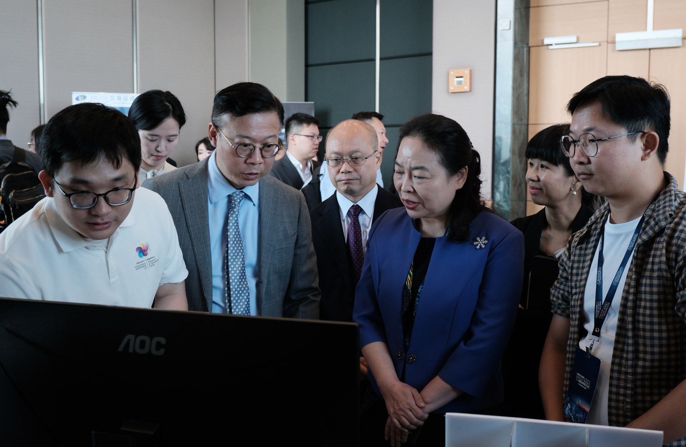
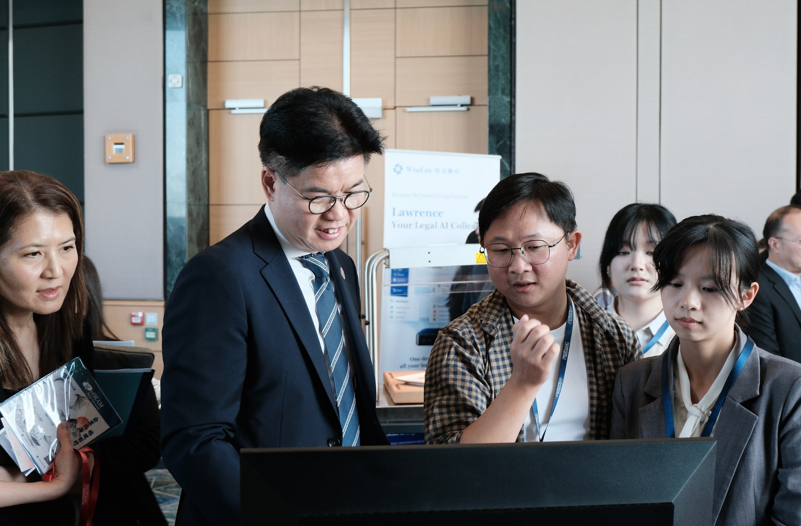
Drawing on the on-site demonstrations, the team introduced LexiHK’s strengths in supporting legal research, improving work efficiency and meeting local professional needs, illustrating the potential of artificial intelligence to empower Hong Kong legal services.
In addition, Mr Roden M. L. Tong, President of the Law Society of Hong Kong, Mr Amirali B. Nasir, Vice-President, and other guests also visited the LexiHK booth to exchange views with the LexiHK team and learn about the product’s functions and application scenarios.
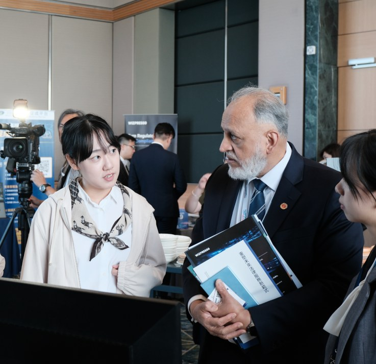
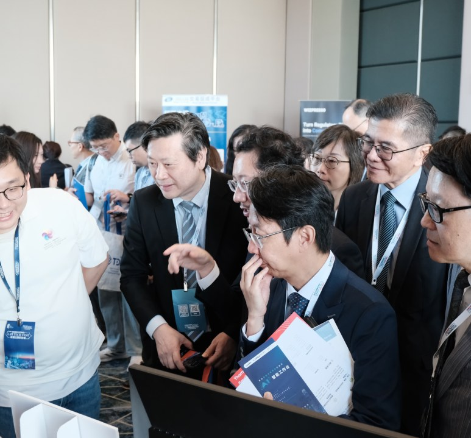
The team explained to the Law Society of Hong Kong how LexiHK addresses the day-to-day needs of Hong Kong solicitors by providing intelligent assistance for legal research, document analysis and drafting, and presented its strengths in improving work efficiency and meeting local professional needs, again illustrating the potential of artificial intelligence to empower Hong Kong legal services.
PART 02 A Live Demonstration at the Insight Stage: A New Intelligent Experience for Legal Work
On the morning of 5 November, Professor Sirui Han, Head of LexiHK, delivered a dedicated LexiHK presentation and feature demonstration at the Insight Stage of the Hong Kong Legal Tech Festival, placing the product’s capabilities within a continuous legal work scenario and showing how artificial intelligence can start from a specific question and help complete source retrieval, information structuring and first-draft preparation.
The demonstration followed work steps familiar to legal professionals. As the question was entered, sources were retrieved and analysis was organised step by step, LexiHK presented the whole process from a research need to a preliminary output. In view of the importance that legal work attaches to verifying authorities, the demonstration also showed how the relevant sources support users’ further review, effectively connecting intelligent assistance with professional oversight.
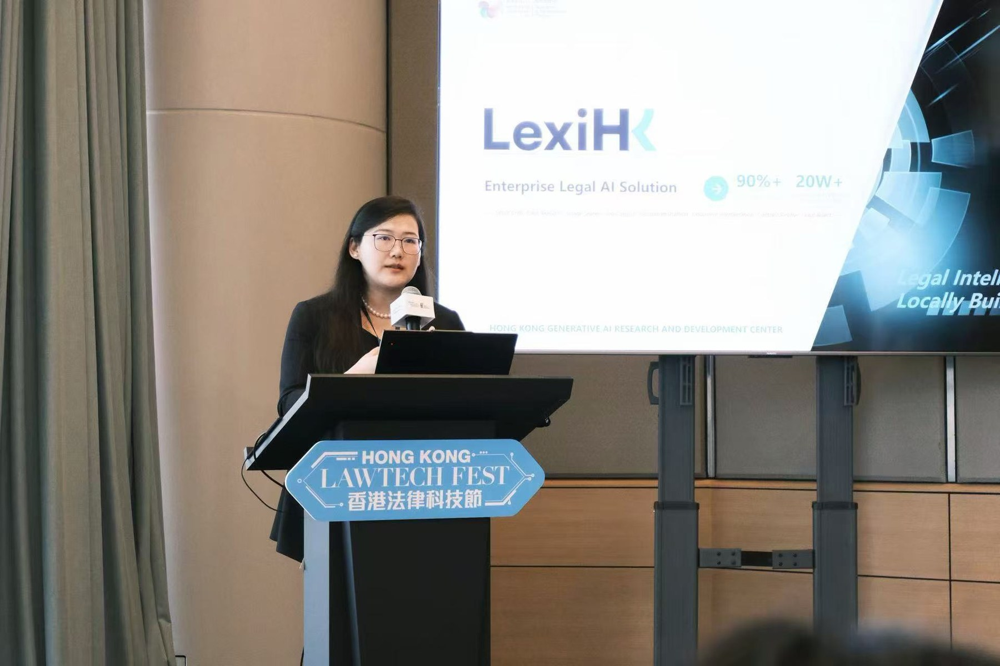
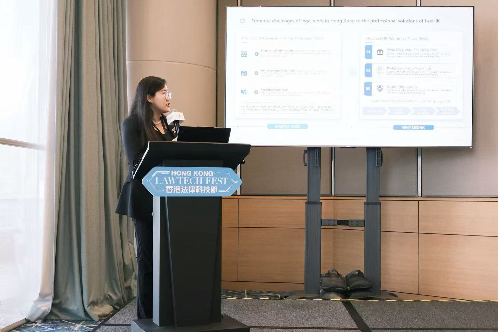
From “finding the material” to “putting the material to use”, and from a single task to a continuous workflow, LexiHK demonstrated further possibilities for integrating artificial intelligence into legal practice. The demonstration also made the thinking behind the product visible, turning technical capability into work support that legal professionals can understand, operate and evaluate.
PART 03 Deepening Industry Exchange and Opening New Opportunities in LawTech
During the exhibition, the LexiHK team held in-depth exchanges with representatives of legal technology companies and professional service providers active in the Hong Kong market, including LexisNexis and Wolters Kluwer, sharing experience on the application of artificial intelligence in legal research, document processing and professional workflows, and discussing the real needs of Hong Kong’s legal sector and the room for cooperation.
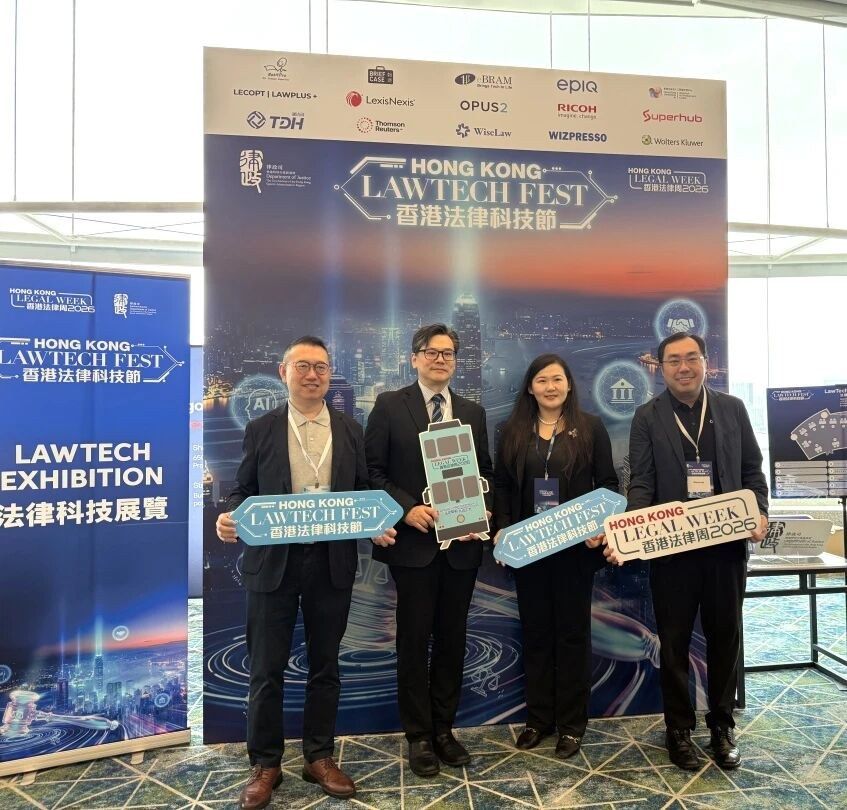
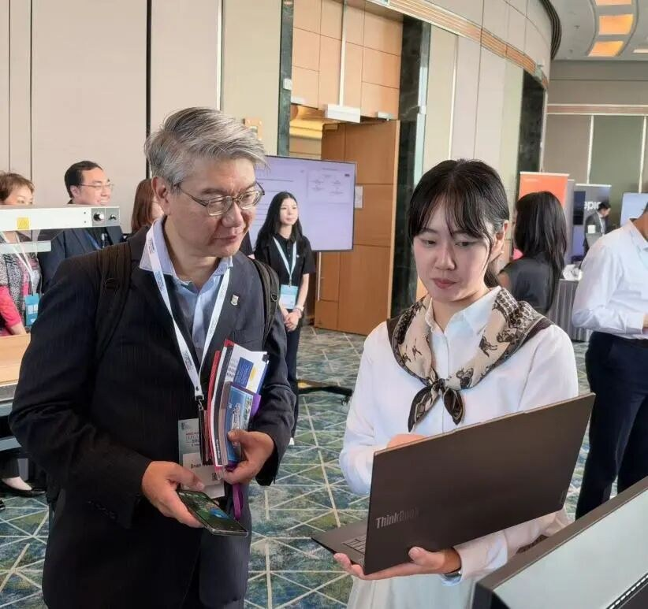
Drawing on its research and development experience in Hong Kong legal scenarios, the LexiHK team introduced the product’s exploration in applying local legal resources, tracing information sources and building intelligent assistance workflows, and exchanged views with industry partners on connecting technology with professional services. The exhibition proved an important opportunity for LexiHK to expand industry contacts and deepen understanding of cooperation; the team posed for photographs with representatives of a number of exhibiting organisations, establishing contacts for subsequent product refinement and cooperation, and jointly advancing the application and development of lawtech in Hong Kong.
PART 04 LexiHK Selected as a Designated Supplier under the Department of Justice LawTech Funding Scheme
Department of Justice LawTech Funding Scheme
On 3 November, the Department of Justice officially launched the Funding Scheme for LawTech Solution Subscription by the Hong Kong Legal Sector, and LexiHK was selected as one of the 14 designated lawtech service providers. The scheme is one of the policy measures under the Chief Executive’s 2026 Policy Address and is jointly administered by the Law Society of Hong Kong and the Hong Kong Bar Association. It targets law firms operating as sole proprietorships or with no more than five partners, and barristers with no more than seven years of call, subsidising their one-year service subscriptions on an actual-expense reimbursement basis. Each applicant may receive up to HK$20,000, and the application deadline is 29 January 2027.
Law firms may apply through the Law Society of Hong Kong, and barristers through the Hong Kong Bar Association. To apply, scan or long-press the QR code below to visit the scheme pages of the Law Society of Hong Kong or the Hong Kong Bar Association for the scheme details and application documents.
LexiHK Trial and Subscription Plans
LexiHK currently offers four subscription plans — Individual, Professional, Team and Law Firm — with annual fees ranging from HK$10,000 to HK$40,000. All plans are valid for 12 months and come with one to five designated accounts and shared annual credits, with additional seats and credit top-up packs available on demand.
You may scan the QR code above to apply for a LexiHK trial account.
Eligible small and medium-sized law firms and newly qualified barristers may apply for up to HK$20,000 under the funding scheme above; subscriptions taken out during Legal Week enjoy double credits, and the full annual cost of the Individual and Professional plans can largely be covered by the subsidy.
LexiHK Product Functions in Detail
Built around the Hong Kong common law system and local legal materials, the functions currently on public display comprise four core capabilities — Legal Agent, Document Drafting, Legal Search and Contract Review — which respectively help break down tasks, organise materials, locate authorities and identify clause risks.
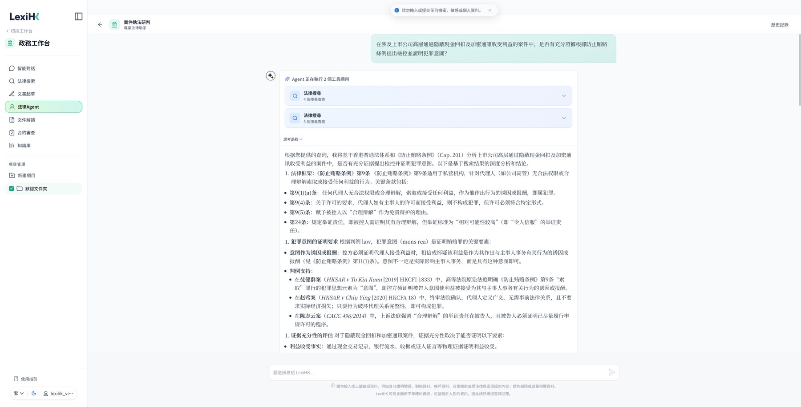
The Legal Agent helps users organise the question and the next steps, while Document Drafting provides first drafts and structural references. Both are intended to save time on preliminary organisation and repetitive drafting; users remain responsible for verifying important facts and legal judgments.
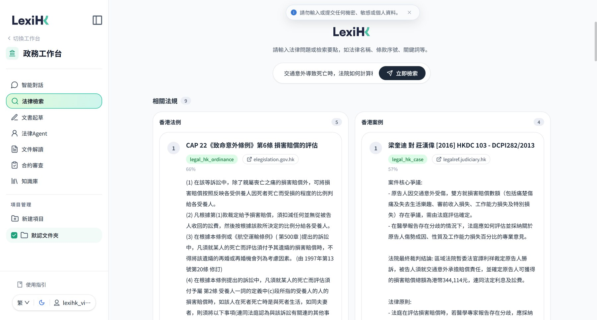
Legal Search helps users locate Hong Kong legislation, case law and related materials, with verifiable sources attached; Contract Review flags clauses and risk points that require attention, making it easier for professionals to examine them further.
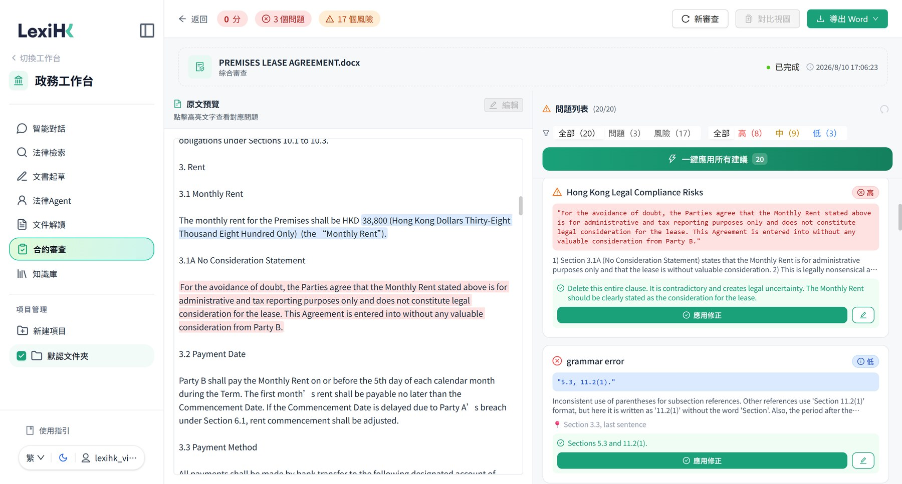
The LexiHK team of the Hong Kong Generative AI Research and Development Center (HKGAI) will continue to address the practical needs of Hong Kong’s legal services, improving its retrieval, analysis and drafting support so that the tool — with traceable sources and verifiable conclusions — can be better integrated into daily work. You are invited to experience LexiHK, HKGAI’s legal artificial intelligence product, and to appreciate the practical value of intelligent assistance in real work scenarios.
Source: the WeChat article “LexiHK Debuts at Hong Kong Legal Week 2026 and Is Officially Selected as a Designated LawTech Service Provider of the Department of Justice”, published by “AI and Law Research” on 6 November 2026 (the original text was revised on the same date). This document is a formatted edition of the original article; all texts and images are taken from the original.
All events and news